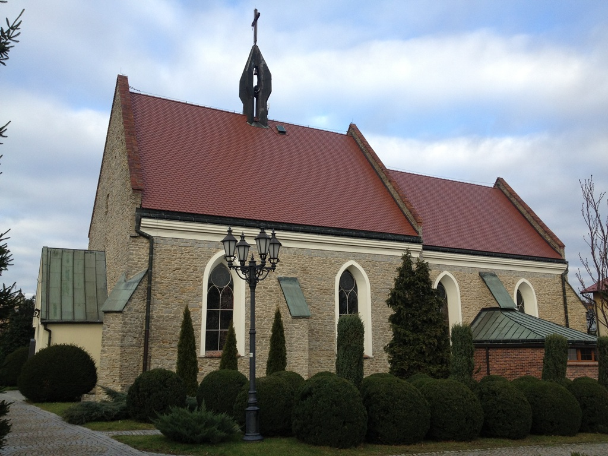

Ko¶ció³ p.w. Naj¶wiêtszej Marii Panny przy ul. Staromiejskiej
Najprawdopodobniej zosta³ wzniesiony na prze³omie XIII i XIVw jako kooeció³ p.w. Naj¶wiêtszej Marii Panny. Pierwsza wzmianka ¼ród³owa pochodzi z 1316r.
W nastêpnych latach by³ poddany przebudowom. W 1548r. - w zwi±zku z ruchem reformacyjnym - zosta³ przejêty przez miejscowych protestantów , którzy u¿ywali
¶wi±tyni - z ró¿n± czêstotliwooeci± i przeznaczeniem - do XVIIIw. W 1750r. na mocy rozporz±dzenia króla pruskiego Fryderyka II Wielkiego ko¶ció³ razem
z okolicznym cmentarzem przekazano grupie uchod¼ców religijnych z Czech (142 rodziny) - byli to potomkowie braci czeskich (pó¼niej ko¶ció³ ewangelicko reformowany),
którzy prze¶ladowani w habsburskich Czechach znale¼li schronienie na pruskiej ziemi strzeliñskiej. Od tej pory ¶wi±tynia zwana by³a ko¶cio³em Braci Czeskich.
Jak podaj± ¼ród³a ju¿ 8 czerwca 1749r. pierwsze czeskie kazanie wyg³osi³ pastor Blanik, ale uroczyste otwarcie ¶wi±tyni mia³o nast±piæ w 1753r.
Nowi gospodarze przyst±pili do modernizacji ¶wi±tyni zakoñczonej w 1779r. - wtedy powsta³y empory ( dzisiaj nieistniej±ce ) oraz zakrystia i kruchta do kaplicy pó³nocnej.
Stopniowo uchod¼cy czescy zadomawiali siê na tej ziemi zak³adaj±c wsie: Husinec (obecnie Gêsiniec) - 1749-1750, Dolní, Prostøedni i Horní Podìbrady
(Dolne, ¦rednie i Górne Gooeciêcice) - 1766r. czy Kolonie (Dêbniki) i Penè (Pêcz) - 1801r. Mimo, ¿e spo³ecznooeæ ta by³a poddawana silnej germanizacji,
a¿ do II wojny ¶wiatowej znacznej czê¶ci Czechów uda³o siê zachowaæ swoj± odrêbnooeæ kulturow±. Po wojnie ( do 1958r. ) wiêkszo¶æ z nich wyjecha³a z ziemi strzeliñskiej
do Czechos³owacji lub Niemiec - pozosta³y jedynie mieszane rodziny polsko - czeskie ( które pozosta³y przy wyznaniu ewangelicko reformowanym ). ¦wi±tynia stopniowo
by³a dewastowana. Dopiero 19 marca 1982r. miejscowi ewangelicy reformowani przekazali ¶wi±tyniê w u¿ytkowanie strzeliñskiej parafii rzymsko-katolickiej
zastrzegaj±c sobie prawo do wspó³u¿ytkowania. Do odbudowy ko¶cio³a dosz³o w latach 1983 - 1987. Wykonano wtedy m. in. nowy strop, dach, posadzkê,
odtworzono gotyckie okna wraz z maswerkami. Oficjalnie 17 lipca 1987r. erygowano tutaj parafiê p.w. Matki Chrystusa i ¦w. Jana Ewangelisty. Zgodnie z umow±
ewangelicy dysponuj± boczn± kapliczk± ko¶cio³a. Bry³a ko¶cio³a zachowa³a cechy gotyckie, które po³±czone zosta³y z elementami nowoczesnymi.
O stylu gotyckim ¶wiadcz± np. ostro³ukowe obramienia wej¶æ do kruchty zachodniej i z zakrystii oraz portal kaplicy bocznej ko¶cio³a. Uwagê zwraca równie¿ wnêka
w ¶cianie po prawej stronie prezbiterium ujêta gotyck± arkad± (tzw. armarium). Teren ko¶cio³a otoczony murem z barokow± bram±, nieopodal stoi marmurowa
figura oew. Jana Nepomucena z 1729r., która do 1945r. sta³a w naro¿niku ratusza.